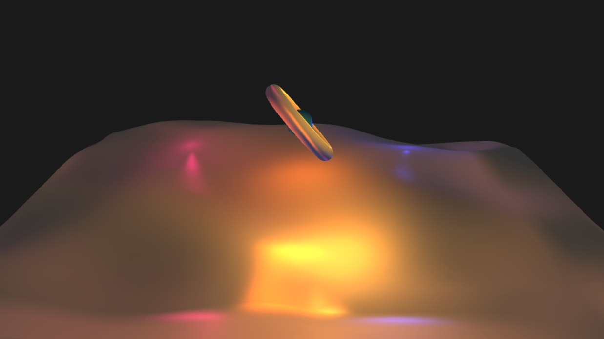
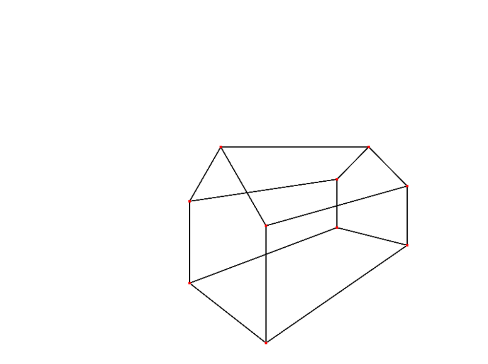

This is a fragmentShader project I worked on for my computer
graphics class. The fragment shader I wrote generates a
kaleidoscope like effect over the displayed video, you can view a
live version of this
here.

This is a custom implementation of the standard illumination model
for my computer graphics class. Custom vertex and fragment shaders
were written to transform the geometry onto the camera and calculate
the lighting and colors. You can view a live version
here.

This is a wireframe renderer I created for my computer graphics
class. You can view a live version
here.